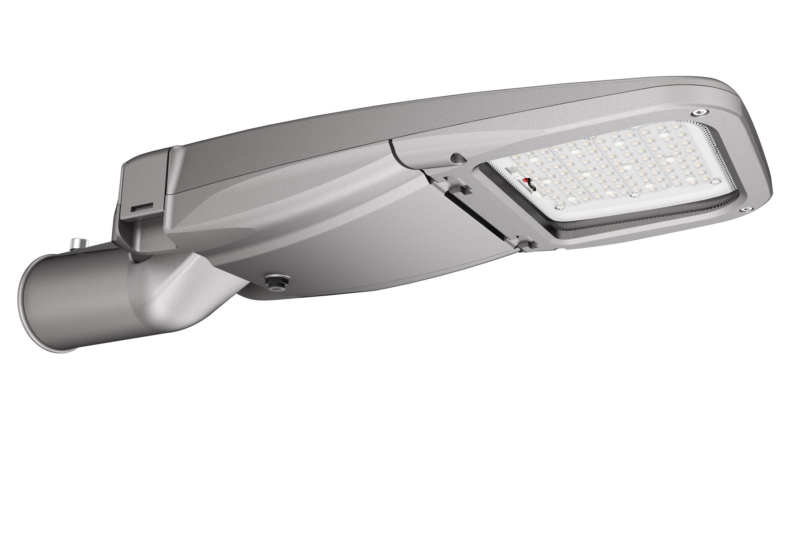

杭州中港数码技术有限公司
规格型号:
ZGSM-LD25KS:30-48P/50-24P
ZGSM-LD35KS:30-72P/50-36P
ZGSM-LD55KS:30-96P/50-48P
它具有以下特点:
1:铝压铸外壳
2:玻璃面发光
3:最大输出功率55W
4:采用国内知名品牌电源
5:3030光效125LM/W
6:5050光效145LM/W
7:仰角可调
8:水平、垂直皆可安装

可选光谱:
TYPE I-M(30)
TYPE II-M(30/50)
TYPE II-BLS(30)
TYPE III-M(30/50)
可选显指:
70
80
90
取得认证:
CE/CB
ENEC
ROHS
IK10/IP66
LM80
地址:杭州临安玲珑工业区锦溪南路1188号 W:t372151 Q:530847653 15958131886庹荣鸥